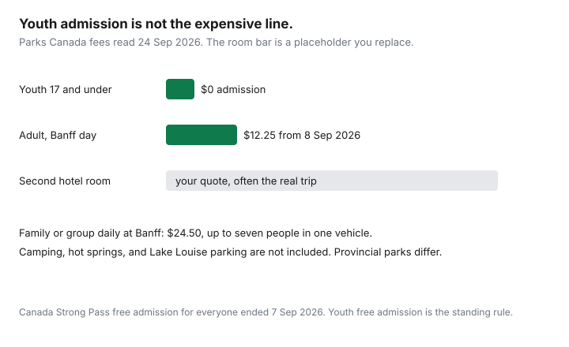

Travel · Canada
Travelling with Teens from Canada on a Budget: Destinations and Activity Mixes That Work
Teen trips get expensive when every day needs a purchased climax: a park ticket, a game, a tour, then a cafe because everyone is tired and the phone is at 4 percent. Middle-aged parents then conclude that travelling with a 14-year-old and a 17-year-old is a resort or nothing. It is a design problem. Pick the interest, put mobility and one outing in the plan, and cap the money the teens can spend without a meeting.
The frame is a Canadian household: domestic cities and parks, plus a sun week when that is the interest and the school calendar allows a week that is not the peak. Fees below were read on 24 Sep 2026. Food and transit prices move. This page does not rank hotels.
Disclosure: Hotel and vacation-rental booking sites are an offer type. Saving Optimizer may earn a commission if we later add partner links. We do not claim a hotel or booking-site partnership. Compare the checkout total, including cleaning fees and tax. Education only.
Key takeaways
- Filter first: city, nature, beach, or a theme park. A resort booked for teens who wanted a city will be fought every morning.
- Prefer places where the day moves on transit or on a Parks Canada pass. Youth 17 and under are free at Parks Canada. Camping, shuttles, and parking are not.
- Price one room, a suite, or a rental with a door before you accept two full hotel rooms. Ask the teens first.
- A daily stipend beats a running tab. Parents pay the planned activity. The stipend is the impulse.
- Exams and team schedules outrank a cheap month. Cafe rules outrank a lecture about phones.
Teen interest filters: cities, nature, beach, or theme parks
Ask which kind of day they will tolerate, in writing, before anyone opens a map. Four filters cover almost every argument we see in a family budget.
- City. They want food, stores, a skyline, and the right to split off for an hour. The budget works when the neighbourhood is walkable and one museum or one event is the paid piece. It fails when the “city” is a highway hotel and a mall.
- Nature. They will hike, swim, or sit in a spectacular place if the walk is finite and there is a real meal afterward. It fails when every day is a drive between viewpoints and the phones do not work, unless you agreed the disconnection on purpose.
- Beach. The activity is the water. A city of museums will feel like school. Price a shoulder sun week with the Mexico or Caribbean sheet, or a domestic water week that is not a theme park in disguise.
- Theme park. One day, maybe two, as the trip’s paid climax. The other days have to be cheap on purpose. A four-day park ticket is a different product from a city trip with one park day. Price it as the whole holiday, not as an add-on you will “see how we feel.”
If the two teens do not match, the trip needs a base that serves both: a city beside a ferry or a trail, or a park town with one evening that is not a visitor centre. Do not book the specialist trip for the louder child and call the other one difficult.
Destinations with free/low-cost mobility (transit cities, national parks)
Free and low-cost mobility is the difference between a teen trip and a ticket queue. Two patterns earn their keep from Canada.
Transit cities. Montreal, Toronto, Vancouver, Ottawa, Quebec City, and Halifax can be done with a day pass or a stored-value card plus walking. Price the pass the week you travel. The point is structural: the teens can move without a parent driving, and without a rideshare every time someone is bored. Give them the pass at the start of the day. A pass they have to request from you is a negotiation, and negotiations become snacks.
National parks. Parks Canada has offered free admission to youth 17 and under since 1 January 2018. The 2026 fee pages still say so. Banff’s regular daily rate from 8 September 2026 is $12.25 for an adult 18 to 64, $10.75 for a senior, and $24.50 for a family or group of up to seven in one vehicle. Youth are free. The Canada Strong Pass, which made admission free for everyone for a stretch of 2026, ended on 7 September 2026. Regular fees apply after that. Free youth admission does not cover camping, the Banff Upper Hot Springs, reservation fees, or Lake Louise parking. A Discovery Pass is an adult and family-group question, worked in the pass guide. Provincial parks are a separate fee schedule. A Parks Canada youth rule does not apply at a provincial gate.

A useful mix is three cheap days and one paid day. Example shapes, not itineraries you must copy: two walkable days in Montreal and one museum; two trail days in a park and one paid shuttle or one dinner in town; a beach week with the resort’s included activities and a single excursion you pre-agree. If every day on the list has a ticket, you did not filter. You built a festival.
Sleeping arrangements that avoid two full rooms when possible
The family lodging guide prices children’s fares and a per-day number. With teens, the bed question changes. A 15-year-old is not a lap infant, and many hotels treat 18 as the age where an extra adult rate or an occupancy rule appears. Read the occupancy line. Then try to avoid two full rooms in this order:
- Ask whether one room with two beds is acceptable for the number of nights you are actually booking. Three nights is a different answer from ten. Get the answer at home.
- A suite or a room with a sofa bed so someone is not on the floor and the bathroom queue is the only fight. Compare the suite with two standard rooms, all-in, tax included.
- A rental with a door that closes between sleeping areas. Run the cleaning fee, the guest fee, and the tax through the all-in lodging guide before you call it cheaper. A kitchen is the food plan, not a bonus.
- Two rooms when the first three fail, or when a teen and a much younger child cannot share. Book it on purpose. Do not discover it at the desk.
Connecting rooms are a request, not a confirmation, unless the rate says so. If privacy is the condition for the trip happening, pay for the door. A cheap room that produces a daily fight is not the cheap room.
Give teens a daily activity stipend to limit impulse spending
Impulse spending is the second room’s quieter cousin. A teen with a parent’s credit card, or with a parent who says yes in line, will buy the trip a second time in hoodies and dessert. Set the stipend before you leave.
- A fixed amount per day, in cash or on a prepaid balance. Same number for each teen unless you are paying one of them back for something you already agreed.
- Parents pay transit and the one activity that was on the plan. The stipend pays the extra snack, the shirt, and the second activity they add.
- When it is gone, the day continues on foot. You do not top it up because a shop was persuasive. Top-ups teach the stipend is theatre.
- Leftover cash is theirs. That is what makes the cap feel fair on day two.
Pick the number from a real day, not from a slogan. If lunch out is supposed to come from the stipend, the number has to buy lunch. If lunch is a grocery picnic you already funded, the stipend can be smaller. Write which one you meant.
Shoulder-season timing around exams and sports
Teens do not have a free September just because a fare study likes September. Expedia’s 2026 Canada signal, used in the shoulder-season guide, points at January for domestic trips and September for international trips, versus December peaks. School, exams, and sports decide whether you can use the month.
Put three blocks on the calendar before you shop: exam weeks for each teen, tournament or recital weekends, and the family’s non-negotiable work weeks. The gaps that remain are the only dates. A shoulder week in late June, late August, or the February and April shifts in the March break guide will beat a famous cheap month that sits on a diploma exam. The Europe guide makes the same point for households whose teens block September: late June and late August are the months you can actually leave.
If the only legal week is the school break, stop hunting a shoulder fantasy and shop that week early, with a ceiling. Pretending a team will skip a provincial weekend is how deposits get lost.
Digital downtime expectations that prevent cafe-bill blowouts
Phones are not the budget problem. Sitting down to charge them is. A “quick coffee so they can use the Wi-Fi” twice a day, for two teens and a parent, is a second meal plan. Agree this before the airport, when nobody is hungry:
- Homework and messages happen on the hotel, rental, or park-town connection you already paid for.
- One bought drink if you sit in a cafe, and it comes from the stipend or from a single family stop you planned. Not from a new yes.
- Downloads happen at home. A video stream on cellular roaming is not a rounding error. If you buy a travel data add-on or an eSIM, cap it in dollars before departure and say what happens when the cap hits.
- A no-phone hour is a kindness to the day, not a punishment. Put it on a hike or a meal, and keep it short enough that you will enforce it.
Tell them the rule in one sentence they can repeat: the trip pays for the plan, the stipend pays for the extra, and a cafe is not a free waiting room. Then keep the sentence when you are the one who wants the second latte.
Sources & date stamps
- Parks Canada, passes and fees, and the Banff fee table — free admission for youth 17 and under since 1 January 2018; regular fees from 8 September 2026, Banff adult daily $12.25, senior $10.75, family/group $24.50; camping and listed services excluded. Canada Strong Pass free admission ended 7 September 2026. Read 24 Sep 2026.
- Expedia.ca 2026 Air Hacks, February 2026 — January domestic and September international signals, as used in the shoulder-season guide. School calendars override the month. Used 24 Sep 2026.
- Transit day-pass prices are local and change. Price them the week you go. This page does not publish a national pass fare.
Frequently asked questions
Where can Canadian families take teens without buying a ticket every day?
Cities with a walkable centre and a day pass, and Parks Canada places where youth 17 and under have free admission. The paid item is one outing you chose together, not the structure of the day. Provincial parks charge their own fees. Youth free admission does not include camping or parking.
Do teens still need their own hotel room?
Not always. A second room is the line that breaks a lot of teen trips. A suite, a rental with a door that closes, or one room with two beds can work when the teens agree before you book. Ask them. A room they refuse is two rooms plus a bad week.
How do we stop impulse spending?
Give a daily stipend in cash or on a prepaid balance, and say what it covers. Parents pay transit and the one planned activity. When the stipend is gone, the rest of the day is free. The prepaid-card guide is the tool if you do not want to hand over a credit card.
When should we travel if there are exams or sports?
Put exam weeks and tournament weekends on the calendar before you open a fare. September can be a cheaper international month in Expedia’s 2026 Canada data and still be impossible if school has started. Shoulder weeks around those constraints beat a famous cheap month you cannot use.
How do we keep cafe bills from replacing the food budget?
Agree the rule before departure. Hotel or rental Wi-Fi is for homework and messages. Sitting down to use a password is a bought drink, once, if you planned it. Two unplanned cafe stops a day are a restaurant budget wearing a different name.